With diverse environments, we can analyze, diagnose and edit deep reinforcement learning models using attribution.
Observation (video game still)
Positive attribution (good news)
Negative attribution (bad news)
Attribution from a hidden layer to the value function, showing what features of the observation (left) are used to predict success (middle) and failure (right). Applying dimensionality reduction (NMF) yields features that detect various in-game objects.
Coin
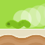
Enemy
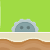
Buzzsaw
In this article, we apply interpretability techniques to a reinforcement learning (RL) model trained to play the video game CoinRun . Using attribution combined with dimensionality reduction as in , we build an interface for exploring the objects detected by the model, and how they influence its value function and policy. We leverage this interface in several ways.
Dissecting failure. We perform a step-by-step analysis of the agent's behavior in cases where it failed to achieve the maximum reward, allowing us to understand what went wrong, and why. For example, one case of failure was caused by an obstacle being temporarily obscured from view.
Hallucinations. We find situations when the model "hallucinated" a feature not present in the observation, thereby explaining inaccuracies in the model's value function. These were brief enough that they did not affect the agent's behavior.
Model editing. We hand-edit the weights of the model to blind the agent to certain hazards, without otherwise changing the agent's behavior. We verify the effects of these edits by checking which hazards cause the new agents to fail. Such editing is only made possible by our previous analysis, and thus provides a quantitative validation of this analysis.
Our results depend on levels in CoinRun being procedurally-generated, leading us to formulate a diversity hypothesis for interpretability. If it is correct, then we can expect RL models to become more interpretable as the environments they are trained on become more diverse. We provide evidence for our hypothesis by measuring the relationship between interpretability and generalization.
Finally, we provide a thorough investigation of several interpretability techniques in the context of RL vision, and pose a number of questions for further research.
Our CoinRun model
CoinRun is a side-scrolling platformer in which the agent must dodge enemies and other traps and collect the coin at the end of the level.
Our trained model playing CoinRun. Left: full resolution. Right: 64x64 RGB observations given to the model.
CoinRun is procedurally-generated, meaning that each new level encountered by the agent is randomly generated from scratch. This incentivizes the model to learn how to spot the different kinds of objects in the game, since it cannot get away with simply memorizing a small number of specific trajectories .We use the original version of CoinRun , not the version from Procgen Benchmark , which is slightly different. To play CoinRun yourself, please follow the instructions here.
Here are some examples of the objects used, along with walls and floors, to generate CoinRun levels.
Full resolution
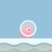
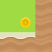
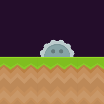
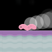
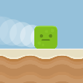
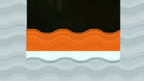
Model resolution
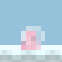
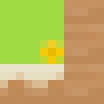
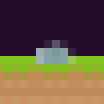
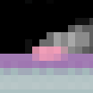
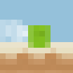
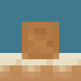
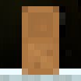
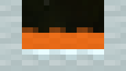
The agent, in mid air (left) and about to jump (right). The agent also appears in beige, blue and green.
Coins, which have to be collected.
Stationary buzzsaw obstacles, which must be dodged.
Enemies, which must be dodged, moving left and right. There are several alternative sprites, all with white trails.
Boxes, which the agent can both move past and land on top of.
Lava at the bottom of a chasm.
The velocity info painted into the top left of each observation, indicating the agent's horizontal and vertical velocities.Painting in the velocity info allows the model to infer the agent's motion from a single frame. The shade of the left square indicates the agent's horizontal velocity (black for left at full speed, white for right at full speed), and the shade of the right square indicates the agent's vertical velocity (black for down at full speed, white for up at full speed). In this example, the agent is moving forward and about to land (and is thus moving right and down).
There are 9 actions available to the agent in CoinRun:
←
→
Left and right change the agent's horizontal velocity. They still work while the agent is in mid-air, but have less of an effect.
↓
Down cancels a jump if used immediately after up, and steps the agent down from boxes.
↑
↖
↗
Up causes the agent to jump after the next non-up action. Diagonal directions have the same effect as both component directions combined.
A
B
C
A, B and C do nothing.The original version of CoinRun only has 1 "do nothing" action, but our version ended up with 3 when "A" and "B" actions were added to be used in other games. For consistency, we have relabeled the original "do nothing" action as "C".
We trained a convolutional neural network on CoinRun for around 2 billion timesteps, using PPO , an actor-critic algorithm.We used the standard PPO hyperparameters for CoinRun , except that we used twice as many copies of the environment per worker and twice and many workers. The effect of these changes was to increase the effective batch size, which seemed to be necessary to reach the same performance with our smaller architecture. The architecture of our network is described in Appendix C. We used a non-recurrent network, to avoid any need to visualize multiple frames at once. Thus our model observes a single downsampled 64x64 image, and outputs a value function (an estimate of the total future time-discounted reward) and a policy (a probability distribution over the actions, from which the next action is sampled).
Schematic of a typical non-recurrent convolutional actor-critic model, such as ours.
Since the only available reward is a fixed bonus for collecting the coin, the value function estimates the time-discountedWe use a discount rate of 0.999 per timestep. probability that the agent will successfully complete the level.
Model analysis
Having trained a strong RL agent, we were curious to see what it had learned. Following , we developed an interface for examining trajectories of the agent playing the game. This incorporates attribution from a hidden layer that recognizes objects, which serves to highlight objects that positively or negatively influence a particular network output. By applying dimensionality reduction, we obtain attribution vectors whose components correspond to different types of object, which we indicate using different colors.
Here is our interface for a typical trajectory, with the value function as the network output. It reveals the model using obstacles, coins, enemies and more to compute the value function.
Dissecting failure
Our fully-trained model fails to complete around 1 in every 200 levels. We explored a few of these failures using our interface, and found that we were usually able to understand why they occurred.
The failure often boils down to the fact that the model has no memory, and must therefore choose its action based only on the current observation. It is also common for some unlucky sampling of actions from the agent's policy to be partly responsible.
Here are some cherry-picked examples of failures, carefully analyzed step-by-step.
The agent moves too far to the right while in mid-air as a result of a buzzsaw obstacle being temporarily hidden from view by a moving enemy. The buzzsaw comes back into view, but too late to avoid a collision.
The agent presses down in a bid to delay a jump. This causes the agent to inadvertently step down from a box and onto an enemy.
The agent fails to move far enough to the right while in mid-air, as a result of the platform where it was intending to land moving below the field of view.
Hallucinations
We searched for errors in the model using generalized advantage estimation (GAE) ,We use the same GAE hyperparameters as in training, namely \gamma=0.999 and \lambda=0.95. which measures how successful each action turned out relative to the agent's expectations. An unusually high or low GAE indicates that either something unexpected occurred, or the agent's expectations were miscalibrated. Filtering for such timesteps can therefore find problems with the value function or policy.
Using our interface, we found a couple of cases in which the model "hallucinated" a feature not present in the observation, causing the value function to spike.
At one point the value function spiked upwards from 95% to 98% for a single timestep. This was due to a curved yellow-brown shape in the background, which happened to appear next to a wall, being mistaken for a coin.
At another point the value function spiked downwards from 94% to 85% for a single timestep. This was due to the agent, colored in gray-blue and crouching against a mottled background, being mistaken for a buzzsaw obstacle. An actual buzzsaw was also present in the observation, but the main effect was from the misjudged agent, as shown by the larger red circle around the agent (hover over the first legend item to isolate).
Model editing
Our analysis so far has been mostly qualitative. To quantitatively validate our analysis, we hand-edited the model to make the agent blind to certain features identified by our interface: buzzsaw obstacles in one case, and left-moving enemies in another. Our method for this can be thought of as a primitive form of circuit-editing , and we explain it in detail in Appendix A.
We evaluated each edit by measuring the percentage of levels that the new agent failed to complete, broken down by the object that the agent collided with to cause the failure. Our results show that our edits were successful and targeted, with no statistically measurable effects on the agent's other abilities.The data for this plot are as follows. Percentage of levels failed due to: buzzsaw obstacle / enemy moving left / enemy moving right / multiple or other: - Original model: 0.37% / 0.16% / 0.12% / 0.08% - Buzzsaw obstacle blindness: 12.76% / 0.16% / 0.08% / 0.05% - Enemy moving left blindness: 0.36% / 4.69% / 0.97% / 0.07% Each model was tested on 10,000 levels.
Results of testing each model on 10,000 levels. Note that moving enemies can change direction.
We did not manage to achieve complete blindness, however: the buzzsaw-edited model still performed significantly better than the original model did when we made the buzzsaws completely invisible.Our results on the version of the game with invisible buzzsaws are as follows. Percentage of levels failed due to: buzzsaw obstacle / enemy moving left / enemy moving right / multiple or other: Original model, invisible buzzsaws: 32.20% / 0.05% / 0.05% / 0.05% We tested the model on 10,000 levels. We experimented briefly with iterating the editing procedure, but were not able to achieve more than around 50% buzzsaw blindness by this metric without affecting the model's other abilities. This implies that the model has other ways of detecting buzzsaws than the feature identified by our interface.
Here are the original and edited models playing some cherry-picked levels.
Original model.
Buzzsaw obstacle blindness.
Enemy moving left blindness.
The diversity hypothesis
All of the above analysis uses the same hidden layer of our network, the third of five convolutional layers, since it was much harder to find interpretable features at other layers. Interestingly, the level of abstraction at which this layer operates – finding the locations of various in-game objects – is exactly the level at which CoinRun levels are randomized using procedural generation. Furthermore, we found that training on many randomized levels was essential for us to be able to find any interpretable features at all.
This led us to suspect that the diversity introduced by CoinRun's randomization is linked to the formation of interpretable features. We call this the diversity hypothesis:
Interpretable features tend to arise (at a given level of abstraction) if and only if the training distribution is diverse enough (at that level of abstraction).
Our explanation for this hypothesis is as follows. For the forward implication ("only if"), we only expect features to be interpretable if they are general enough, and when the training distribution is not diverse enough, models have no incentive to develop features that generalize instead of overfitting. For the reverse implication ("if"), we do not expect it to hold in a strict sense: diversity on its own is not enough to guarantee the development of interpretable features, since they must also be relevant to the task. Rather, our intention with the reverse implication is to hypothesize that it holds very often in practice, as a result of generalization being bottlenecked by diversity.
In CoinRun, procedural generation is used to incentivize the model to learn skills that generalize to unseen levels . However, only the layout of each level is randomized, and correspondingly, we were only able to find interpretable features at the level of abstraction of objects. At a lower level, there are only a handful of visual patterns in the game, and the low-level features of our model seem to consist mostly of memorized color configurations used for picking these out. Similarly, the game's high-level dynamics follow a few simple rules, and accordingly the high-level features of our model seem to involve mixtures of combinations of objects that are hard to decipher. To explore the other convolutional layers, see the interface here.
Interpretability and generalization
To test our hypothesis, we made the training distribution less diverse, by training the agent on a fixed set of 100 levels. This dramatically reduced our ability to interpret the model's features. Here we display an interface for the new model, generated in the same way as the one above. The smoothly increasing value function suggests that the model has memorized the number of timesteps until the end of the level, and the features it uses for this focus on irrelevant background objects. Similar overfitting occurs for other video games with a limited number of levels .
We attempted to quantify this effect by varying the number of levels used to train the agent, and evaluating the 8 features identified by our interface on how interpretable they were.The interfaces used for this evaluation can be found here. Features were scored based on how consistently they focused on the same objects, and whether the value function attribution made sense – for example, background objects should not be relevant. This process was subjective and noisy, but that may be unavoidable. We also measured the generalization ability of each model, by testing the agent on unseen levels .The data for this plot are as follows. - Number of training levels: 100 / 300 / 1000 / 3,000 / 10,000 / 30,000 / 100,000 - Percentage of levels completed (train, run 1): 99.96% / 99.82% / 99.67% / 99.65% / 99.47% / 99.55% / 99.57% - Percentage of levels completed (train, run 2): 99.97% / 99.86% / 99.70% / 99.46% / 99.39% / 99.50% / 99.37% - Percentage of levels completed (test, run 1): 61.81% / 66.95% / 74.93% / 89.87% / 97.53% / 98.66% / 99.25% - Percentage of levels completed (test, run 2): 64.13% / 67.64% / 73.46% / 90.36% / 97.44% / 98.89% / 99.35% - Percentage of features interpretable (researcher 1, run 1): 52.5% / 22.5% / 11.25% / 45% / 90% / 75% / 91.25% - Percentage of features interpretable (researcher 2, run 1): 8.75% / 8.75% / 10% / 26.25% / 56.25% / 90% / 70% - Percentage of features interpretable (researcher 1, run 2): 15% / 13.75% / 15% / 23.75% / 53.75% / 90% / 96.25% - Percentage of features interpretable (researcher 2, run 2): 3.75% / 6.25% / 21.25% / 45% / 72.5% / 83.75% / 77.5% Percentages of levels completed are estimated by sampling 10,000 levels with replacement.
Comparison of models trained on different numbers of levels. Two models were trained for each number of levels, and two researchers independently evaluated how interpretable the features of each model were, without being shown the number of levels.Our methodology had some flaws. Firstly, the researchers were not completely blind to the number of levels: for example, it is possible to infer something about the number of levels from the smoothness of graphs of the value function, since with fewer levels the model is better able to memorize the number of timesteps until the end of the level. Secondly, since evaluations are somewhat tedious, we stopped them once we thought the trend had become clear, introducing some selection bias. Therefore these results should be considered primarily illustrative. Each model was tested on 10,000 train and 10,000 test levels sampled with replacement. Shaded areas in the left plot show the range of values over both models, though these are mostly too narrow to be visible. Error bars in the right plot show ±1 population standard deviation over all four model–researcher pairs.
Our results illustrate how diversity may lead to interpretable features via generalization, lending support to the diversity hypothesis. Nevertheless, we still consider the hypothesis to be highly unproven.
Feature visualization
Feature visualization answers questions about what certain parts of a network are looking for by generating examples. This can be done by applying gradient descent to the input image, starting from random noise, with the objective of activating a particular neuron or group of neurons. While this method works well for an image classifier trained on ImageNet , for our CoinRun model it yields only featureless clouds of color. Only for the first layer, which computes simple convolutions of the input, does the method produce comparable visualizations for the two models.
ImageNet
CoinRun
First layer
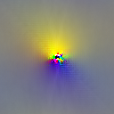
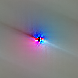
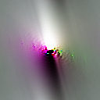
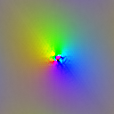
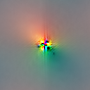
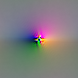
Intermediate layer
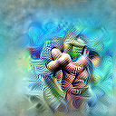
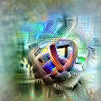
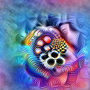
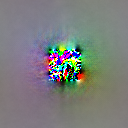
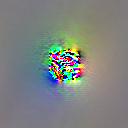
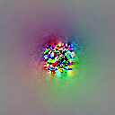
Comparison of gradient-based feature visualization for CNNs trained on ImageNet (GoogLeNet ) and on CoinRun (architecture described below). Each image was chosen to activate a neuron in the center, with the 3 images corresponding to the first 3 channels. Jittering was applied between optimization steps of up to 2 pixels for the first layer, and up to 8 pixels for the intermediate layer (mixed4a for ImageNet, 2b for CoinRun).
Gradient-based feature visualization has previously been shown to struggle with RL models trained on Atari games . To try to get it to work for CoinRun, we varied the method in a number of ways. Nothing we tried had any noticeable effect on the quality of the visualizations.
Transformation robustness. This is the method of stochastically jittering, rotating and scaling the image between optimization steps, to search for examples that are robust to these transformations . We tried both increasing and decreasing the size of the jittering. Rotating and scaling are less appropriate for CoinRun, since the observations themselves are not invariant to these transformations.
Penalizing extremal colors.By an "extremal" color we mean one of the 8 colors with maximal or minimal RGB values (black, white, red, green, blue, yellow, cyan and magenta). Noticing that our visualizations tend to use extremal colors towards the middle, we tried including in the visualization objective an L2 penalty of various strengths on the activations of the first layer, which successfully reduced the size of the extremally-colored region but did not otherwise help.
Alternative objectives. We tried using an alternative optimization objective , such as the caricature objective.The caricature objective is to maximize the dot product between the activations of the input image and the activations of a reference image. Caricatures are often an especially easy type of feature visualization to make work, and helpful for getting a first glance into what features a model has. They are demonstrated in this notebook. A more detailed manuscript by its authors is forthcoming. We also tried using dimensionality reduction, as described below, to choose non-axis-aligned directions in activation space to maximize.
Low-level visual diversity. In an attempt to broaden the distribution of images seen by the model, we retrained it on a version of the game with procedurally-generated sprites. We additionally tried adding noise to the images, both independent per-pixel noise and spatially-correlated noise. Finally, we experimented briefly with adversarial training , though we did not pursue this line of inquiry very far.
As shown below, we were able to use dataset examples to identify a number of channels that pick out human-interpretable features. It is therefore striking how resistant gradient-based methods were to our efforts. We believe that this is because solving CoinRun does not ultimately require much visual ability. Even with our modifications, it is possible to solve the game using simple visual shortcuts, such as picking out certain small configurations of pixels. These shortcuts work well on the narrow distribution of images on which the model is trained, but behave unpredictably in the full space of images in which gradient-based optimization takes place.
Our analysis here provides further insight into the diversity hypothesis. In support of the hypothesis, we have examples of features that are hard to interpret in the absence of diversity. But there is also evidence that the hypothesis may need to be refined. Firstly, it seems to be a lack of diversity at a low level of abstraction that harms our ability to interpret features at all levels of abstraction, which could be due to the fact that gradient-based feature visualization needs to back-propagate through earlier layers. Secondly, the failure of our efforts to increase low-level visual diversity suggests that diversity may need to be assessed in the context of the requirements of the task.
Dataset example-based feature visualization
As an alternative to gradient-based feature visualization, we use dataset examples. This idea has a long history, and can be thought of as a heavily-regularized form of feature visualization . In more detail, we sample a few thousand observations infrequently from the agent playing the game, and pass them through the model. We then apply a dimensionality reduction method known as non-negative matrix factorization (NMF) to the activation channels .More precisely, we find a non-negative approximate low-rank factorization of the matrix obtained by flattening the spatial dimensions of the activations into the batch dimension. This matrix has one row per observation per spatial position and one column per channel: thus the dimensionality reduction does not use spatial information. For each of the resulting channels (which correspond to weighted combinations of the original channels), we choose the observations and spatial positions with the strongest activation (with a limited number of examples per position, for diversity), and display a patch from the observation at that position.
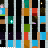
Short left-facing wall
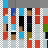
Velocity info or left edge of screen
Long left-facing wall
Left end of platform
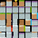
Right end of platform
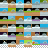
Buzzsaw obstacle or platform
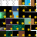
Coin
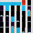
Top/right edge of screen
Left end of platform
Step
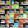
Agent or enemy moving right
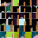
Left edge of box
Right end of platform
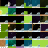
Buzzsaw obstacle
Top left corner of box
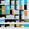
Left end of platform or bottom/right of screen?
Dataset example-based feature visualizations for 16 NMF directions of layer 2b of our CoinRun model. The grey-white checkerboard represents the edge of the screen. The labels are hand-composed.
Unlike gradient-based feature visualization, this method finds some meaning to the different directions in activation space. However, it may still fail to provide a complete picture for each direction, since it only shows a limited number of dataset examples, and with limited context.
Spatially-aware feature visualization
CoinRun observations differ from natural images in that they are much less spatially invariant. For example, the agent always appears in the center, and the agent's velocity is always encoded in the top left. As a result, some features detect unrelated things at different spatial positions, such as reading the agent's velocity in the top left while detecting an unrelated object elsewhere. To account for this, we developed a spatially-aware version of dataset example-based feature visualization, in which we fix each spatial position in turn, and choose the observation with the strongest activation at that position (with a limited number of reuses of the same observation, for diversity). This creates a spatial correspondence between visualizations and observations.
Here is such a visualization for a feature that responds strongly to coins. The white squares in the top left show that the feature also responds strongly to the horizontal velocity info when it is white, corresponding to the agent moving right at full speed.
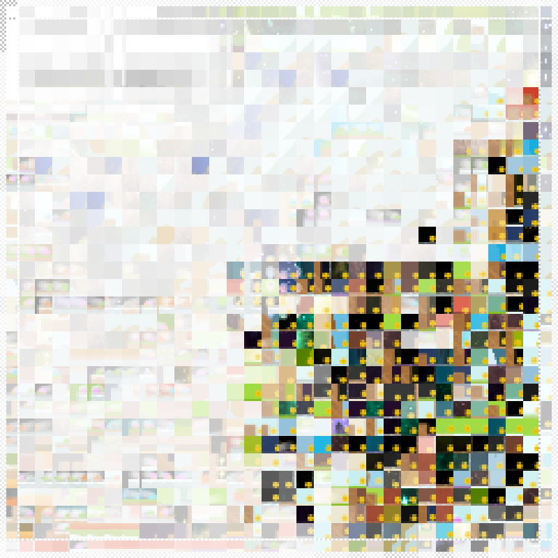
Spatially-aware dataset example-based feature visualization for the coin-detecting NMF direction of layer 2b. Transparency (revealing the diagonally-striped background) indicates a weak response, so the left half of the visualization is mostly transparent because coins never appear in the left half of observations.
Attribution
Attribution answers questions about the relationships between neurons. It is most commonly used to see how the input to a network affects a particular output , but it can also be applied to the activations of hidden layers . Although there are many approaches to attribution we could have used, we chose the method of integrated gradients . We explain in Appendix B how we applied this method a hidden layer, and how positive value function attribution can be thought of as "good news" and negative value function attribution can as "bad news".
Dimensionality reduction for attribution
We showed above that a dimensionality reduction method known as non-negative matrix factorization (NMF) could be applied to the channels of activations to produce meaningful directions in activation space . We found that it is even more effective to apply NMF not to activations, but to value function attributionsAs before, we obtain the NMF directions by sampling a few thousand observations infrequently from the agent playing the game, computing the attributions, flattening the spatial dimensions into the batch dimension, and applying NMF. (working around the fact that NMF can only be applied to non-negative matricesOur workaround is to separate out the positive and negative parts of the attributions and concatenate them along the batch dimension. We could also have concatenated them along the channel dimension.). Both methods tend to produce NMF directions that are close to one-hot, and so can be thought of as picking out the most relevant channels. However, when reducing to a small number of dimensions, using attributions usually picks out more salient features, because attribution takes into account not just what neurons respond to but also whether their response matters.
Following , after applying NMF to attributions, we visualize them by assigning a different color to each of the resulting channels. We overlay these visualizations over the observation and contextualize each channel using feature visualization , making use of dataset example-based feature visualization. This gives a basic version of our interface, which allows us to see the effect of the main features at different spatial positions.
Observation
Positive attribution (good news)
Negative attribution (bad news)
Legend (hover to isolate)
Buzzsaw obstacle
Coin
Enemy moving left
Agent or enemy moving right
Value function attribution for a cherry-picked observation using layer 2b of our CoinRun model, reduced to 4 channels using attribution-based NMF. The dataset example-based feature visualizations of these directions reveal more salient features than the visualizations of the first 4 activation-based NMF directions from the preceding section.
For the full version of our interface, we simply repeat this for an entire trajectory of the agent playing the game. We also incorporate video controls, a timeline view of compressed observations , and additional information, such as model outputs and sampled actions. Together these allow the trajectory to be easily explored and understood.
Attribution discussion
Attributions for our CoinRun model have some interesting properties that would be unusual for an ImageNet model.
Sparsity. Attribution tends to be concentrated in a very small number of spatial positions and (post-NMF) channels. For example, in the figure above, the top 10 position–channel pairs account for more than 80% of the total absolute attribution. This might be explained by our earlier hypothesis that the model identifies objects by picking out certain small configurations of pixels. Because of this sparsity, we smooth out attribution over nearby spatial positions for the full version of our interface, so that the amount of visual space taken up can be used to judge attribution strength. This trades off some spatial precision for more precision with magnitudes.
Unexpected sign. Value function attribution usually has the sign one would expect: positive for coins, negative for enemies, and so on. However, this is sometimes not the case. For example, in the figure above, the red channel that detects buzzsaw obstacles has both positive and negative attribution in two neighboring spatial positions towards the left. Our best guess is that this phenomenon is a result of statistical collinearity, caused by certain correlations in the procedural level generation together with the agent's behavior. These could be visual, such as correlations between nearby pixels, or more abstract, such as both coins and long walls appearing at the end of every level. As a toy example, supposing the value function ought to increase by 2% when the end of the level becomes visible, the model could either increase the value function by 1% for coins and 1% for long walls, or by 3% for coins and −1% for long walls, and the effect would be similar.
Outlier frames. When an unusual event causes the network to output extreme values, attribution can behave especially strangely. For example, in the buzzsaw hallucination frame, most features have a significant amount of both positive and negative attribution. We do not have a good explanation for this, but perhaps features are interacting in more complicated ways than usual. Moreover, in these cases there is often a significant component of the attribution lying outside the space spanned by the NMF directions, which we display as an additional "residual" feature. This could be because each frame is weighted equally when computing NMF, so outlier frames have little influence over the NMF directions.
These considerations suggest that some care may be required when interpreting attributions.
Validity. Does the diversity hypothesis hold in other contexts, both within and outside of reinforcement learning?
Relationship to generalization. What is the three-way relationship between diversity, interpretable features and generalization? Do non-interpretable features indicate that a model will fail to generalize in certain ways? Generalization refers implicitly to an underlying distribution – how should this distribution be chosen?For example, to measure generalization for CoinRun models trained on a limited number of levels, we used the distribution over all possible procedurally-generated levels. However, to formalize the sense in which CoinRun is not diverse in its visual patterns or dynamics rules, one would need a distribution over levels from a wider class of games.
Caveats. How are interpretable features affected by other factors, such as the choice of task or algorithm, and how do these interact with diversity? Speculatively, do big enough models obtain interpretable features via the double descent phenomenon , even in the absence of diversity?
Quantification. Can we quantitatively predict how much diversity is needed for interpretable features, perhaps using generalization metrics? Can we be precise about what is meant by an "interpretable feature" and a "level of abstraction"?
Interpretability in the absence of diversity
Pervasiveness of non-diverse features. Do "non-diverse features", by which we mean the hard-to-interpret features that tend to arise in the absence of diversity, remain when diversity is present? Is there a connection between these non-diverse features and the "non-robust features" that have been posited to explain adversarial examples ?
Coping with non-diverse levels of abstraction. Are there levels of abstraction at which even broad distributions like ImageNet remain non-diverse, and how can we best interpret models at these levels of abstraction?
Gradient-based feature visualization. Why does gradient-based feature visualization break down in the absence of diversity, and can it be made to work using transformation robustness, regularization, data augmentation, adversarial training, or other techniques? What property of the optimization leads to the clouds of extremal colors?
Trustworthiness of dataset examples and attribution. How reliable and trustworthy can we make very heavily-regularized versions of feature visualization, such as those based on dataset examples?Heavily-regularized feature visualization may be untrustworthy by failing to separate the things causing certain behavior from the things that merely correlate with those causes . What explains the strange behavior of attribution, and how trustworthy is it?
Interpretability in the RL framework
Non-visual and abstract features. What are the best methods for interpreting models with non-visual inputs? Even vision models may also have interpretable abstract features, such as relationships between objects or anticipated events: will any method of generating examples be enough to understand these, or do we need an entirely new approach? For models with memory, how can we interpret their hidden states ?
Improving reliability. How can we best identify, understand and correct rare failures and other errors in RL models? Can we actually improve models by model editing, rather than merely degrading them?
Modifying training. In what ways can we train RL models to make them more interpretable without a significant performance cost, such as by altering architectures or adding auxiliary predictive losses?
Leveraging the environment. How can we enrich interfaces using RL-specific data, such as trajectories of agent–environment interaction, state distributions, and advantage estimates? What are the benefits of incorporating user–environment interaction, such as for exploring counterfactuals?
What we would like to see from further research and why
We are motivated to study interpretability for RL for two reasons.
To be able to interpret RL models. RL can be applied to an enormous variety of tasks, and seems likely to be a part of increasingly influential AI systems. It is therefore important to be able to scrutinize RL models and to understand how they might fail. This may also benefit RL research through an improved understanding of the pitfalls of different algorithms and environments.
As a testbed for interpretability techniques. RL models pose a number of distinctive challenges for interpretability techniques. In particular, environments like CoinRun straddle the boundary between memorization and generalization, making them useful for studying the diversity hypothesis and related ideas.
We think that large neural networks are currently the most likely type of model to be used in highly capable and influential AI systems in the future. Contrary to the traditional perception of neural networks as black boxes, we think that there is a fighting chance that we will be able to clearly and thoroughly understand the behavior even of very large networks. We are therefore most excited by neural network interpretability research that scores highly according to the following criteria.
Scalability. The takeaways of the research should have some chance of scaling to harder problems and larger networks. If the techniques themselves do not scale, they should at least reveal some relevant insight that might.
Trustworthiness. Explanations should be faithful to the model. Even if they do not tell the full story, they should at least not be biased in some fatal way (such as by using an approval-based objective that leads to bad explanations that sound good, or by depending on another model that badly distorts information).
Exhaustiveness. This may turn out to be impossible at scale, but we should strive for techniques that explain every essential feature of our models. If there are theoretical limits to exhaustiveness, we should try to understand these.
Low cost. Our techniques should not be significantly more computationally expensive than training the model. We hope that we will not need to train models differently for them to be interpretable, but if we do, we should try to minimize both the computational expense and any performance cost, so that interpretable models are not disincentivized from being used in practice.
Our proposed questions reflect this perspective. One of the reasons we emphasize diversity relates to exhaustiveness. If "non-diverse features" remain when diversity is present, then our current techniques are not exhaustive and could end up missing important features of more capable models. Developing tools to understand non-diverse features may shed light on whether this is likely to be a problem.
We think there may be significant mileage in simply applying existing interpretability techniques, with attention to detail, to more models. Indeed, this was the mindset with which we initially approached this project. If the diversity hypothesis is correct, then this may become easier as we train our models to perform more complex tasks. Like early biologists encountering a new species, there may be a lot we can glean from taking a magnifying glass to the creatures in front of us.
Supplementary material
Code. Utilities for computing feature visualization, attribution and dimensionality reduction for our models can be found in lucid.scratch.rl_util, a submodule of Lucid. We demonstrate these in a notebook.
Model weights. The weights of our model are available for download, along with those of a number of other models, including the models trained on different numbers of levels, the edited models, and models trained on all 16 of the Procgen Benchmark games. These are indexed here.
More interfaces. We generated an expanded version of our interface for every convolutional layer in our model, which can be found here. We also generated similar interfaces for each of our other models, which are indexed here.
Interface code. The code used to generate the expanded version of our interface can be found here.
Appendix A: Model editing method
Here we explain our method for editing the model to make the agent blind to certain features.
The features in our interface correspond to directions in activation space obtained by applying attribution-based NMF to layer 2b of our model. To blind the agent to a feature, we edit the weights to make them project out the corresponding NMF direction.
More precisely, let \mathbf v be the NMF direction corresponding to the feature we wish to blind the model to. This is a vector of length c, the number of channels in activation space. Using this we construct the orthogonal projection matrix P:=I-\frac 1{\|\mathbf v\|^2}\mathbf v\mathbf v^{\mathsf T}, which projects out the direction of \mathbf v from activation vectors. We then take the convolutional kernel of the following layer, which has shape \text{height}\times\text{width}\times c\times d, where d is the number of output channels. Broadcasting across the height and width dimensions, we left-multiply each c\times d matrix in the kernel by P. The effect of the new kernel is to project out the direction of \mathbf v from activations before applying the original kernel.
As it turned out, the NMF directions were close to one-hot, so this procedure is approximately equivalent to zeroing out the slice of the kernel corresponding to a particular in-channel.
Appendix B: Integrated gradients for a hidden layer
Here we explain the application of integrated gradients to a hidden layer for the purpose of attribution. This method can be applied to any of the network's outputs, but we focus here on the value function. Recall that this is the model's estimate of the time-discounted probability that the agent will successfully complete the level.
Let V:\mathbb R^{64\times 64\times 3}\to\mathbb R be the value function computed by our network, which accepts a 64x64 RGB observation. Given any layer in the network, we may write V as V\left(\mathbf x\right)=F\left(\mathbf A\left(\mathbf x\right)\right), where \mathbf A computes the layer's activations. Given an observation \mathbf x, a simple method of attribution is to compute \nabla_{\mathbf a}F\left(\mathbf a\right)\odot\mathbf a, where \mathbf a=\mathbf A\left(\mathbf x\right) and \odot denotes the pointwise product. This tells us the sensitivity of the value function to each activation, multiplied by the strength of that activation. However, it uses the sensitivity of the value function at the activation itself, which does not account for the fact that this sensitivity may change as the activation is increased from zero.
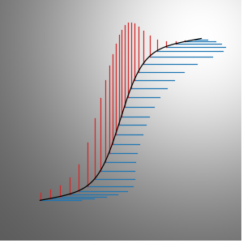
Viewing F as the height of a surface, represented here using the background gradient, the integrated gradient of F measures the elevation gained while traveling in each direction, and sums to the total elevation gain .
To account for this, the integrated gradients method instead chooses a path \mathcal P in activation space from some starting point \mathbf a_0 to the ending point \mathbf a_1:=\mathbf A\left(\mathbf x\right). We then compute the integrated gradient of F along \mathcal P, which is defined as the path integral \int_{\mathcal P}\nabla_{\mathbf a}F\left(\mathbf a\right)\odot\mathrm d\mathbf a. Note the use of the pointwise product rather than the usual dot product here, which makes the integral vector-valued. By the fundamental theorem of calculus for line integrals, when the components of the vector produced by this integral are summed, the result depends only on the endpoints \mathbf a_0 and \mathbf a_1, equaling F\left(\mathbf a_1\right)-F\left(\mathbf a_0\right). Thus the components of this vector provide a true decomposition of this difference, "attributing" it across the activations.
For our purposes, we take \mathcal P to be the straight line from \mathbf 0 to \mathbf A\left(\mathbf x\right).In theory, we could choose any point in activation space as the starting point of our path, but in practice, \mathbf 0 tends to be a good baseline against which to compare other activations, with F\left(\mathbf 0\right) being on the same order as the average value function. Sundararajan, Taly and Yan discuss the choice of this baseline in more depth. In other words, given an observation \mathbf x, we define the value function attribution asIn practice, we numerically approximate the integral by evaluating the integrand at \alpha=0.1,0.2,\ldots,1.
This has the same dimensions as \mathbf A\left(\mathbf x\right), and its components sum to V\left(\mathbf x\right)-F\left(\mathbf 0\right). So for a convolutional layer, this method allows us to attribute the value function (in excess of the baseline F\left(\mathbf 0\right)) across the horizontal, vertical and channel dimensions of activation space. Positive value function attribution can be thought of as "good news", components that cause the agent to think it is more likely to collect the coin at the end of the level. Similarly, negative value function attribution can be thought of as "bad news".
Appendix C: Architecture
Our architecture consists of the following layers in the order given, together with ReLU activations for all except the final layer.
7x7 convolutional layer with 16 channels (layer 1a)
2x2 L2 pooling layer
5x5 convolutional layer with 32 channels (layer 2a)
5x5 convolutional layer with 32 channels (layer 2b)
2x2 L2 pooling layer
5x5 convolutional layer with 32 channels (layer 3a)
2x2 L2 pooling layer
5x5 convolutional layer with 32 channels (layer 4a)
2x2 L2 pooling layer
256-unit dense layer
512-unit dense layer
10-unit dense layer (1 unit for the value function, 9 units for the policy logits)
We designed this architecture by starting with the architecture from IMPALA , and making the following modifications in an attempt to aid interpretability without noticeably sacrificing performance.
We used fewer convolutional layers and more dense layers, to allow for more non-visual processing.
We removed the residual connections, so that the flow of information passes through every layer.
We made the pool size equal to the pool stride, to avoid gradient gridding.
We used L2 pooling instead of max pooling, for more continuous gradients.
The choice that seemed to make the most difference was using 5 rather than 12 convolutional layers, resulting in the object-identifying features (which were the most interpretable, as discussed above) being concentrated in a single layer (layer 2b), rather than being spread over multiple layers and mixed in with less interpretable features.
Acknowledgments
We would like to thank our reviewers Jonathan Uesato, Joel Lehman and one anonymous reviewer for their detailed and thoughtful feedback. We would also like to thank Karl Cobbe, Daniel Filan, Sam Greydanus, Christopher Hesse, Jacob Jackson, Michael Littman, Ben Millwood, Konstantinos Mitsopoulos, Mira Murati, Jorge Orbay, Alex Ray, Ludwig Schubert, John Schulman, Ilya Sutskever, Nevan Wichers, Liang Zhang and Daniel Ziegler for research discussions, feedback, follow-up work, help and support that have greatly benefited this project.
Author contributions
Jacob Hilton was the primary contributor.
Nick Cammarata developed the model editing methodology and suggested applying it to CoinRun models.
Shan Carter (while working at OpenAI) advised on interface design throughout the project, and worked on many of the diagrams in the article.
Chris Olah guided the direction of the project, performing initial exploratory research on the models, coming up with many of the research ideas, and helping to construct the article's narrative.